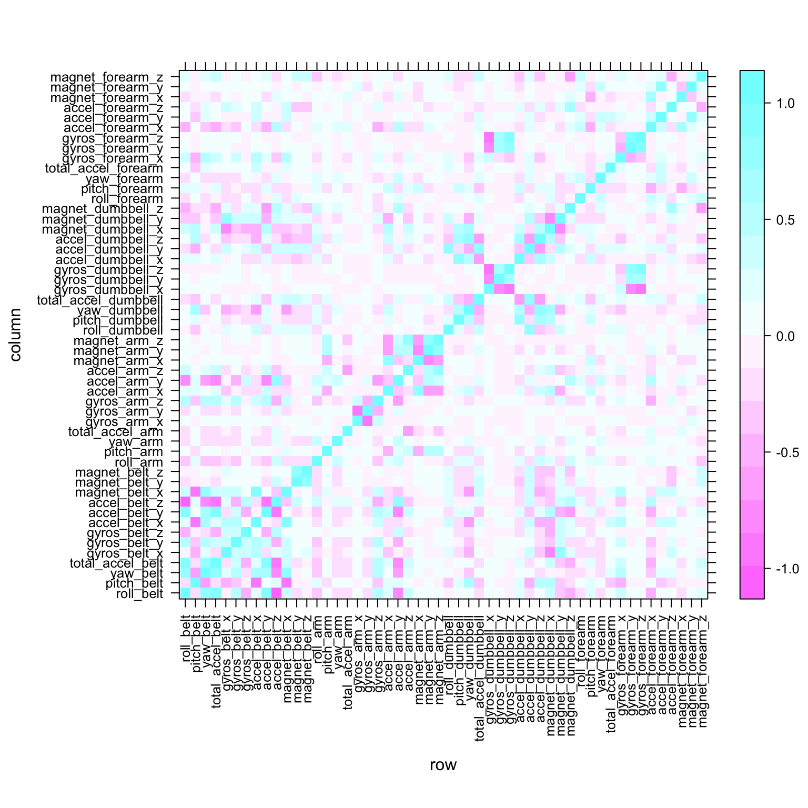
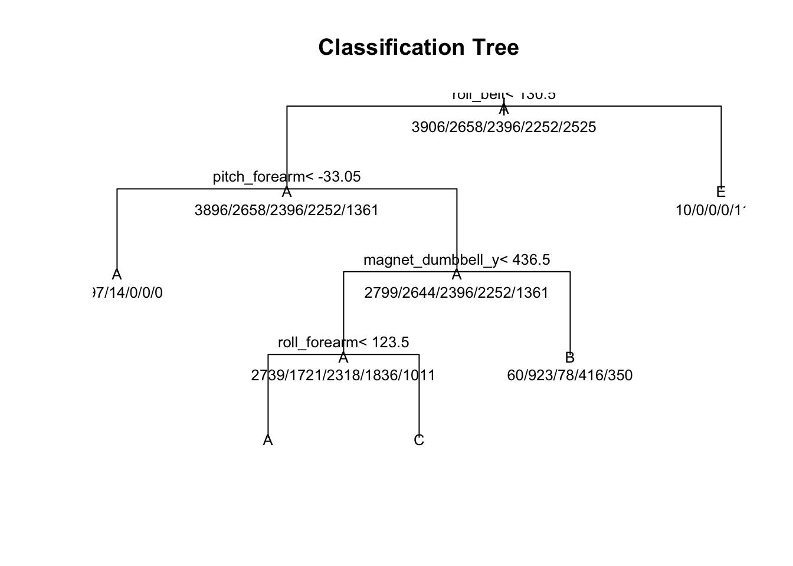
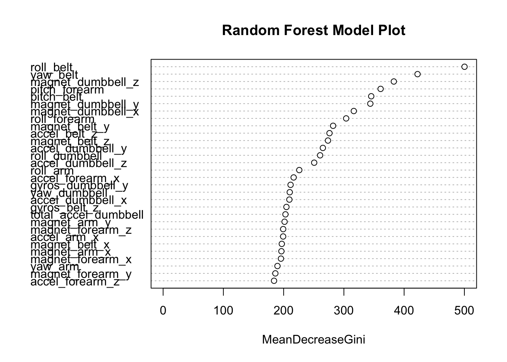

This document is written as part of assignment for coursera course on practical machine learning. The document cmontains data from Human Activity Recognition data set as published in site link http://rmarkdown.rstudio.com.
As part of our Human activity recognition dataset provided for this exercise, we need to identify user activity based on readings of behaviour provided.
Lets us start with loading and exploring the data.
library("caret")## Loading required package: lattice## Loading required package: ggplot2library("dplyr")##
## Attaching package: 'dplyr'## The following objects are masked from 'package:stats':
##
## filter, lag## The following objects are masked from 'package:base':
##
## intersect, setdiff, setequal, unionlibrary("randomForest")## randomForest 4.6-12## Type rfNews() to see new features/changes/bug fixes.##
## Attaching package: 'randomForest'## The following object is masked from 'package:dplyr':
##
## combine## The following object is masked from 'package:ggplot2':
##
## marginlibrary(doMC)## Loading required package: foreach## Loading required package: iterators## Loading required package: parallelregisterDoMC(cores = 2)
if (!file.exists("./pml-training.csv")) {
fileurl <-
"https://d396qusza40orc.cloudfront.net/predmachlearn/pml-training.csv"
download.file(fileurl, "./pml-training.csv", method = "curl")
}
if (!file.exists("./pml-testing.csv")) {
fileurl <-
"https://d396qusza40orc.cloudfront.net/predmachlearn/pml-testing.csv"
download.file(fileurl, "./pml-testing.csv", method = "curl")
}
trainset <- read.csv(file = "./pml-training.csv", header = TRUE)
testset <- read.csv(file = "./pml-testing.csv", header = TRUE)The total no of records in training set are 19622 and no of variables are 160. This is a hugh set of data but as we look deeper we find that we have a large number of NA in the record. This would means that we have redundant features that can be ignored in model generations.
We start by removing the redundant variables X,raw_timestamp_part_1,raw_timestamp_part_2, cvtd_timestamp,new_window,num_window,user_name and converting the variable classe to a factor.
removeredunt <-
trainset %>% select(
-X,
-raw_timestamp_part_1,
-raw_timestamp_part_2,
-cvtd_timestamp,
-new_window,
-num_window,
-user_name,
-classe
)
removeredunt$classe <- as.factor(trainset$classe)
#remove varible with all NA
withoutallna <- removeredunt[, colSums(is.na(removeredunt)) == 0]
dim(withoutallna)## [1] 19622 86This has reduced the features to almost half the original set.We further use nearZeroVar to remove features which have near Zero var and hence donot contribute much to the models.
nearzero <- nearZeroVar(withoutallna, saveMetrics = TRUE)
cleaned <- withoutallna[, nearzero[, "nzv"] == FALSE]
dim(cleaned)## [1] 19622 53Since we have drastically reduced the datasets, removing all redundant features. We should now divide the data into Training and validation set.
#default seed
set.seed(1234)
inTraining <-
createDataPartition(cleaned$classe, p = .7, list = FALSE)
trainsetwithoutna <- cleaned[inTraining, ]
validation <- cleaned[-inTraining, ]
dim(trainsetwithoutna)## [1] 13737 53Before we generate the model, lets see the correlation among the various variable using the correlation plot.
levelplot(cor(trainsetwithoutna %>% select(-classe)),scales=list(x=list(rot=90), cex=0.8) )
We would be running two models on the training data and choose the one that make better prediction.
We first start by training a decision tree model on the data. The code below generates the model ,we have also precomputed and save the model for faster processing.
if (!file.exists("./baserpart.rds")) {
start <- Sys.time()
set.seed(1234)
dtmodel <- train(classe~.,data=trainsetwithoutna,method="rpart");
end <- Sys.time()
end - start
} else {
dtmodel <- readRDS(file = "./baserpart.rds")
}The graphical representation of model is given below. 
The Confusion Matrix of the model on the validation set is computed below
confusionMatrix(predict(dtmodel,validation),validation$classe)## Loading required package: rpart## Confusion Matrix and Statistics
##
## Reference
## Prediction A B C D E
## A 1530 486 493 452 168
## B 35 379 31 164 145
## C 105 274 502 348 302
## D 0 0 0 0 0
## E 4 0 0 0 467
##
## Overall Statistics
##
## Accuracy : 0.489
## 95% CI : (0.4762, 0.5019)
## No Information Rate : 0.2845
## P-Value [Acc > NIR] : < 2.2e-16
##
## Kappa : 0.3311
## Mcnemar's Test P-Value : NA
##
## Statistics by Class:
##
## Class: A Class: B Class: C Class: D Class: E
## Sensitivity 0.9140 0.3327 0.4893 0.0000 0.43161
## Specificity 0.6203 0.9210 0.7882 1.0000 0.99917
## Pos Pred Value 0.4890 0.5027 0.3279 NaN 0.99151
## Neg Pred Value 0.9478 0.8519 0.8797 0.8362 0.88641
## Prevalence 0.2845 0.1935 0.1743 0.1638 0.18386
## Detection Rate 0.2600 0.0644 0.0853 0.0000 0.07935
## Detection Prevalence 0.5317 0.1281 0.2602 0.0000 0.08003
## Balanced Accuracy 0.7671 0.6269 0.6388 0.5000 0.71539The accuracy is quite low in this case using decision tree.
We would now train the same data on a random forest model. As earlier, we have precomputed and saved the model whi
if (!file.exists("./baserf.rds")) {
start <- Sys.time()
set.seed(1234)
rfmodel <-
train(
classe ~ .,
data = trainsetwithoutna,
method = "rf",
verboseIter = TRUE,
allowparallel = TRUE,
prox = TRUE
)
end <- Sys.time()
end - start
} else {
rfmodel <- readRDS(file = "./baserf.rds")
}The Confusion Matrix of the model on the validation set is computed below
confusionMatrix(predict(rfmodel,validation),validation$classe)## Confusion Matrix and Statistics
##
## Reference
## Prediction A B C D E
## A 1673 8 0 0 0
## B 1 1130 7 0 0
## C 0 1 1017 13 1
## D 0 0 2 950 1
## E 0 0 0 1 1080
##
## Overall Statistics
##
## Accuracy : 0.9941
## 95% CI : (0.9917, 0.9959)
## No Information Rate : 0.2845
## P-Value [Acc > NIR] : < 2.2e-16
##
## Kappa : 0.9925
## Mcnemar's Test P-Value : NA
##
## Statistics by Class:
##
## Class: A Class: B Class: C Class: D Class: E
## Sensitivity 0.9994 0.9921 0.9912 0.9855 0.9982
## Specificity 0.9981 0.9983 0.9969 0.9994 0.9998
## Pos Pred Value 0.9952 0.9930 0.9855 0.9969 0.9991
## Neg Pred Value 0.9998 0.9981 0.9981 0.9972 0.9996
## Prevalence 0.2845 0.1935 0.1743 0.1638 0.1839
## Detection Rate 0.2843 0.1920 0.1728 0.1614 0.1835
## Detection Prevalence 0.2856 0.1934 0.1754 0.1619 0.1837
## Balanced Accuracy 0.9988 0.9952 0.9941 0.9924 0.9990The accuracy of the random forest model is quite high.
varImpPlot(rfmodel$finalModel,main="Random Forest Model Plot")
The random forest model presented in this case provide a high accuracy on the data. The human activity Recongnition can be model completed by this process.